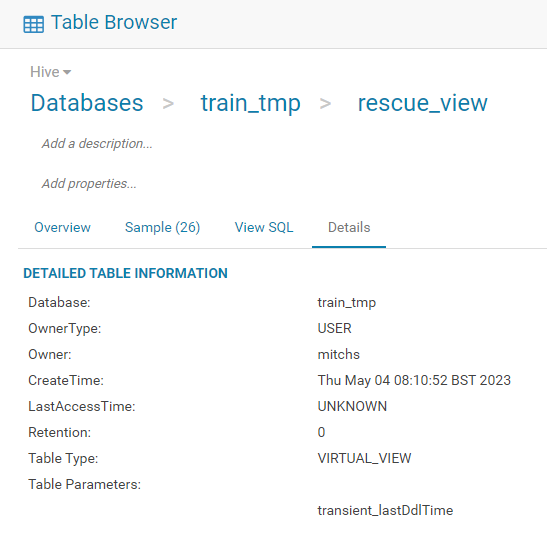
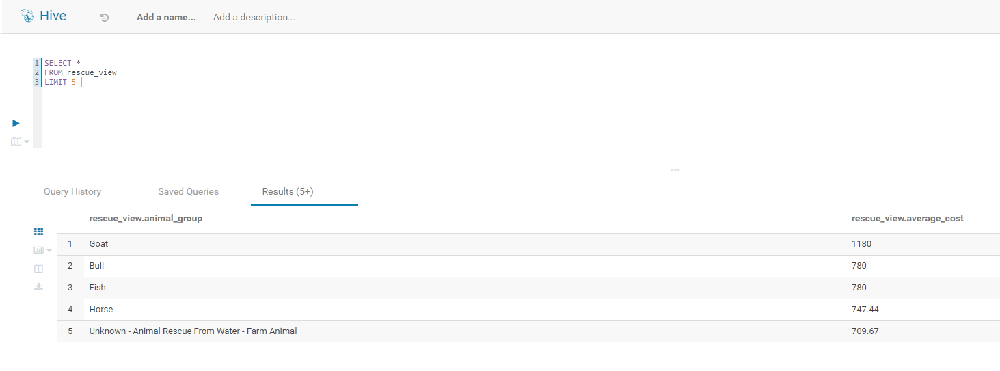

Creating a SQL view in HDFS#
A view in SQL is a way of storing a query by creating a virtual table. This can be useful for many reasons, one being that you can more easily get your desired output as it is simpler to access a view than typing a query from scratch repeatedly. For more information on SQL views please refer to Views in SQL.
As mentioned above, a SQL view can be used to avoid the re-running or pre-processing everytime you would like to use the same data (that has been created using a query) and avoids saving an entirely new table. A SQL view is simply a stored query that is applied to an underlying Hive table; only the metadata of the view will be stored and this happens after the query has been ran. Another advantage of a SQL view is that it refreshes in real-time, which means if the underlying table updates then your view will aswell, the reason being is that each time your view is called the statement used to create the view (from the underlying table) is re-ran.
Please note that a view is a virtual table.
Creating a View#
Below we have an example of using SQL views. We will be working with an existing Hive table called rescue_clean. Upon this table we will create a view that involves some very simple processing of the data. To create a view we first need to login to HUE and navigate to where the Hive databases are stored (under the SQL tab on the left-hand-side); the database we are wanting is called train_tmp as this is where rescue_clean is stored. Please ensure that your editor type is set to Hive (click on the arrow beside the blue Query button and select “Editor -> Hive”).
Now we are in the right location, we can start to create a SQL view. To do this we use the CREATE OR REPLACE VIEW command in SQL:
CREATE OR REPLACE rescue_view AS
SELECT animal_group, ROUND(AVG(total_cost), 2) AS average_cost
FROM rescue_clean
GROUP BY animal_group
ORDER BY average_cost DESC

In the screenshot above it can be seen that rescue_view has been saved as a VIRTUAL_VIEW table type as opposed to being a MANAGED_TABLE or EXTERNAL_TABLE. Another useful way to tell if you have a view is that in your filestore an ‘eye-icon’ will appear next to rescue_view.
Your view, or virtual table, can now be called by using SELECT * FROM rescue_view LIMIT 5 as seen in the screenshot below:

Using Spark and SQL views#
As well as using HUE to interact with your view you can also access it from within a Spark session by reading it in in the same way as any other Hive table would be:
from pyspark.sql import SparkSession
spark = (
SparkSession.builder.appName("spark_views")
.config("spark.ui.showConsoleProgress", "false")
.getOrCreate()
)
df = spark.read.table('train_tmp.rescue_view')
df.show()
+--------------------+------------+
| animal_group|average_cost|
+--------------------+------------+
| Goat| 1180.0|
| Fish| 780.0|
| Bull| 780.0|
| Horse| 747.44|
|Unknown - Animal ...| 709.67|
| Cow| 624.17|
| Hedgehog| 520.0|
| Lamb| 520.0|
| Deer| 423.88|
|Unknown - Wild An...| 390.04|
|Unknown - Heavy L...| 362.55|
| Sheep| 359.25|
| Dog| 336.54|
| Fox| 333.26|
| Cat| 329.18|
| Bird| 325.71|
| Snake| 322.38|
|Unknown - Domesti...| 314.81|
| Pigeon| 311.5|
| Hamster| 311.07|
+--------------------+------------+
only showing top 20 rows
Dropping a SQL view#
You may want to drop a view in SQL from the database, for example you no longer need it, you want to free up space or you want to over-write an existing view. To do the latter you need to drop the previously created view before creating another one with the same name.
To drop an SQL view you simply write: DROP VIEW view_name so for us, in this example, it would be DROP VIEW rescue_view
You can also use the following command: DROP VIEW IF EXISTS view_name. This code checked whether the view actually exists in your database and if so, it removes it.
Further resources#
SQL documentation